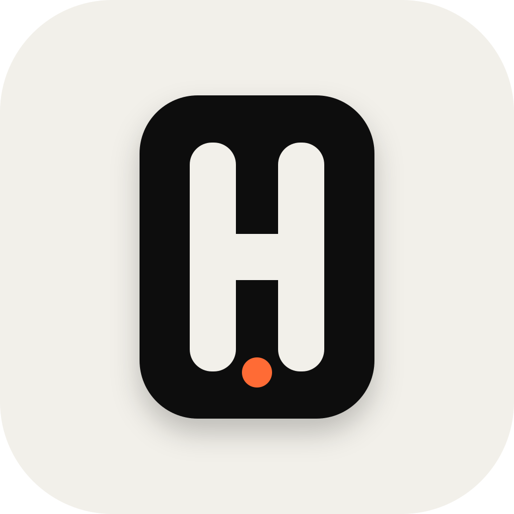
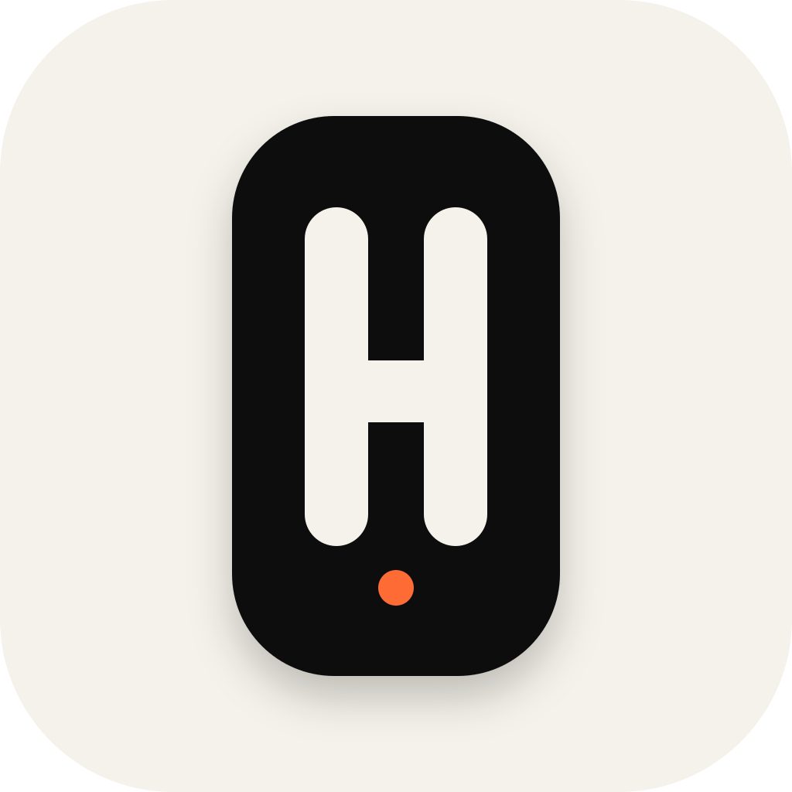
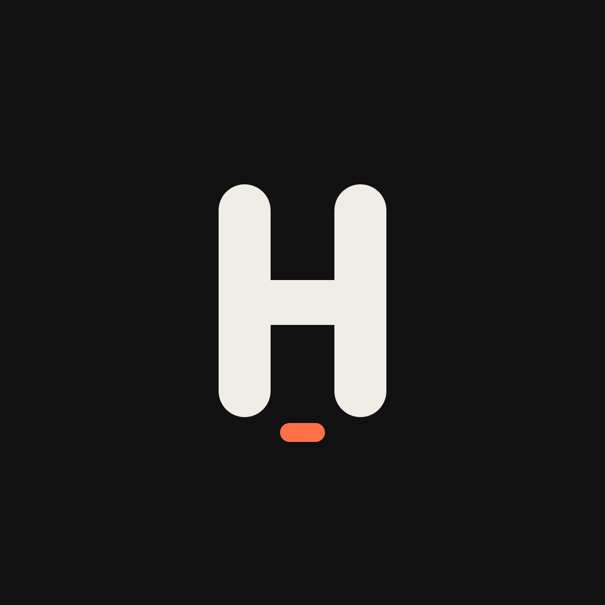
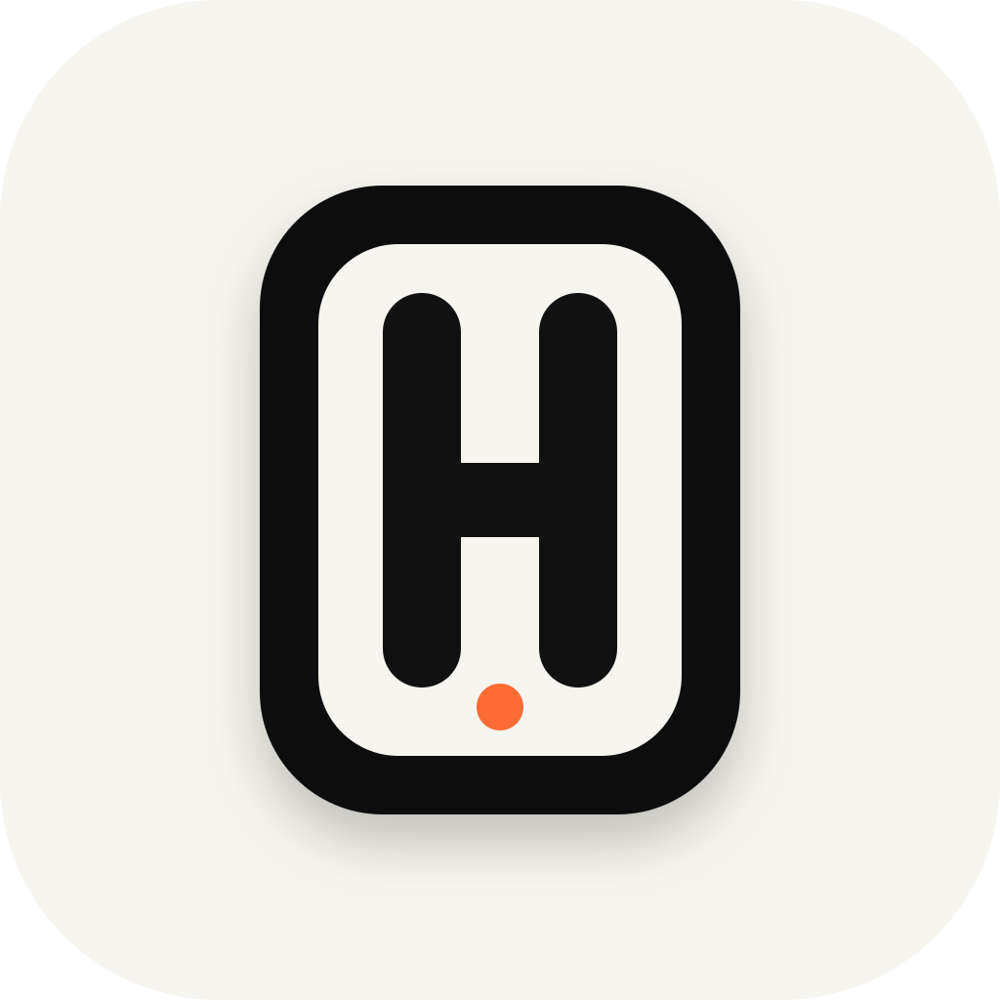
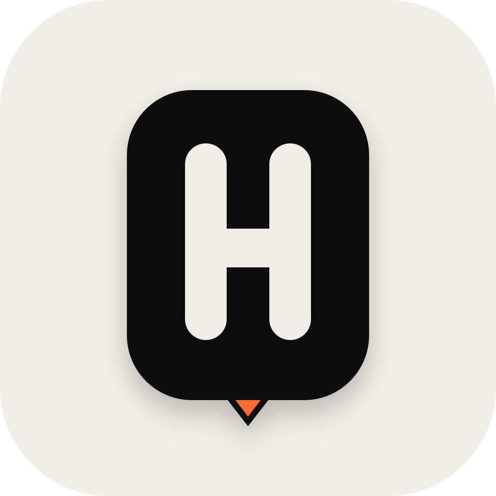
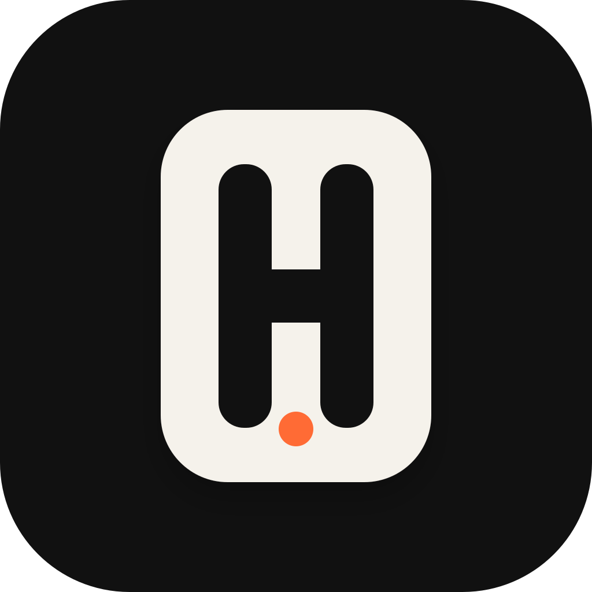
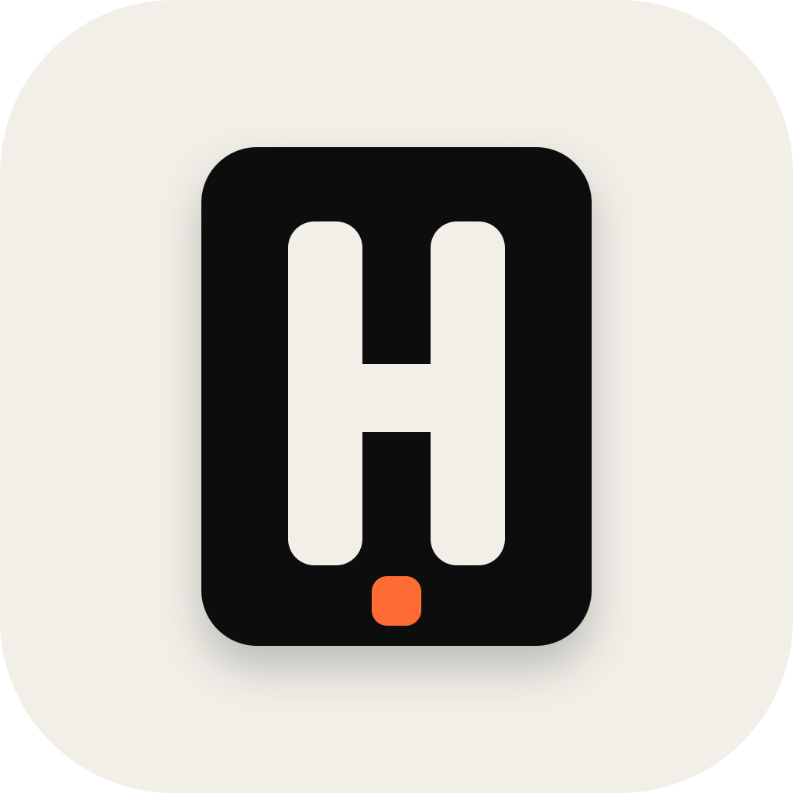
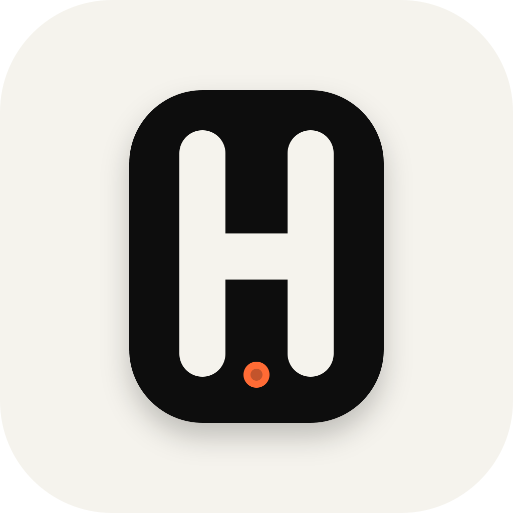
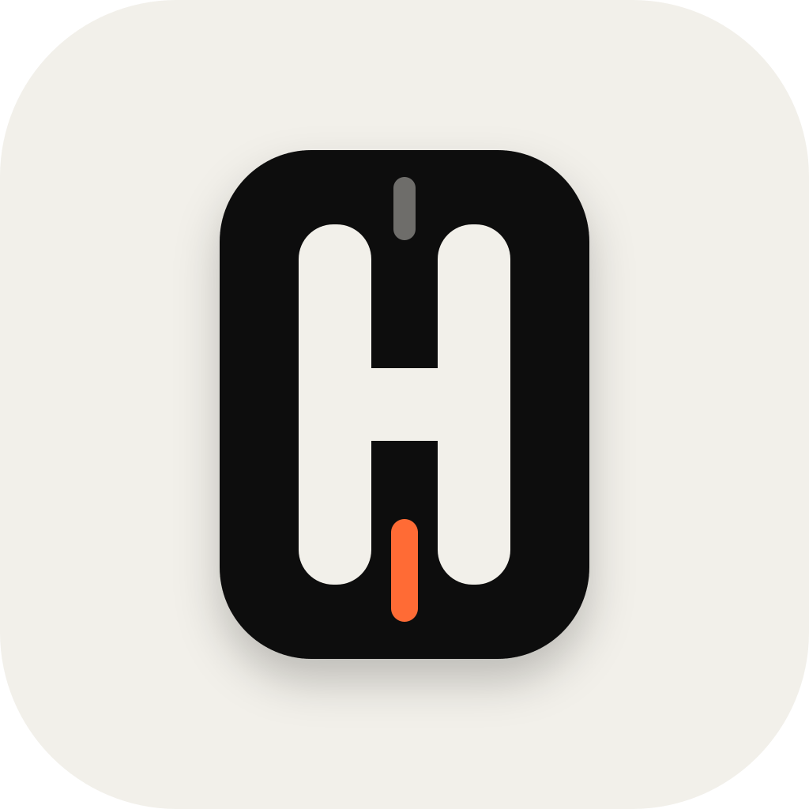

Selected Pillar
The selected direction preserved almost as-is: strict, premium, and small-size friendly.
Ten focused iterations based on the selected Mono Pillar direction. Each proposal includes a 1024x1024 SVG master and PNG export.

The selected direction preserved almost as-is: strict, premium, and small-size friendly.

A more vertical silhouette with stronger app-icon presence and a smaller signal dot.

A calmer variant with a wider body and gentler corners.

A lighter mark that keeps the same silhouette but feels more airy and frontend-friendly.

A sharper, more architectural variant with a bottom notch instead of a floating dot.

A dark-mode first version with the same premium contrast but less beige warmth.
A more product-like take: same H, but the body reads as a location/workspace pin.

The most brutalist option: flatter corners, heavier geometry, and strong favicon readability.

A softer identity variant where the H is still clear but the outer form feels more continuous.

A subtle agent/status variant with one accent lane instead of the original dot.